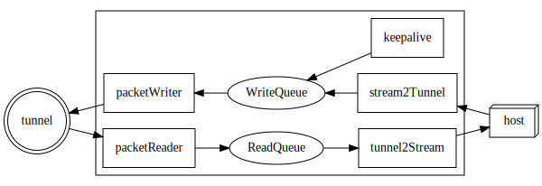

tunnel ツールのネタを書いた時、 dot を使ってグラフを作った。
dot は手軽にグラフを書ける便利なツールだが、 レイアウト制御に難があると思う。
グラフ作成ツールの利点と欠点
dot などのグラフ作成ツールの利点には次が挙げられる。
ノードのリンクを指定するだけで、後はツールが良い感じにグラフを自動で作成してくれる。
パワポ等でグラフを作成するのと比べると、これは大きな利点だ。
そして多くの場合、ツールが作成するグラフは、それなりに見易いグラフになってくれる。
ただ、少ない情報から自動でグラフを作成するため、 意図とは異なるレイアウトのグラフが出来あがることもある。
レイアウトのことは割り切って使うとか、 気に入らないなら他のパワポなどの draw 系のツールで描けば良いという話もあるが、 それは何か違うと思っている。
dot のグラフ
次の図は、 tunnel と host を繋ぐ処理をグラフ化したものだ。

このグラフの dot コードは次になる。
digraph G {
rankdir = RL;
tunnel [shape=doublecircle];
subgraph clusterA {
packetWriter [shape=rect; margin=0.2;];
packetReader [shape=rect; margin=0.2;];
keepalive [shape=rect; margin=0.2;];
WriteQueue
tunnel2Stream [shape=rect; margin=0.2;];
stream2Tunnel [shape=rect; margin=0.2;];
ReadQueue
{rank = max; packetReader; packetWriter}
{rank = same; WriteQueue; ReadQueue}
{rank = min; tunnel2Stream; stream2Tunnel; keepalive}
}
host [shape=box3d];
tunnel -> packetReader
packetReader -> ReadQueue
ReadQueue -> tunnel2Stream
stream2Tunnel -> WriteQueue
WriteQueue -> packetWriter
packetWriter -> tunnel
keepalive -> WriteQueue
tunnel2Stream -> host
host -> stream2Tunnel
{rank=min;host}
}
コードの細かい部分はここでは触れないが、
次の 4 つの {rank=} を指定していることを確認して欲しい。
-
{rank = max; packetReader; packetWriter} -
{rank = same; WriteQueue; ReadQueue} -
{rank = min; tunnel2Stream; stream2Tunnel; keepalive} -
{rank=min;host}
この rank 指定を外してグラフを生成すると次のようになる。
digraph G {
rankdir = RL;
tunnel [shape=doublecircle];
subgraph clusterA {
packetWriter [shape=rect; margin=0.2;];
packetReader [shape=rect; margin=0.2;];
keepalive [shape=rect; margin=0.2;];
WriteQueue
tunnel2Stream [shape=rect; margin=0.2;];
stream2Tunnel [shape=rect; margin=0.2;];
ReadQueue
}
host [shape=box3d];
tunnel -> packetReader
packetReader -> ReadQueue
ReadQueue -> tunnel2Stream
stream2Tunnel -> WriteQueue
WriteQueue -> packetWriter
packetWriter -> tunnel
keepalive -> WriteQueue
tunnel2Stream -> host
host -> stream2Tunnel
}

rank 指定の有無の違い
rank 指定の有無によって生成されるグラフがどのように違いがあるのか、 分かり易いように並べて表示する。
-
rank 指定あり
-
rank 指定なし

rank 指定ありは矢印の向きが素直に円を描いる一方で、 rank 指定なしは矢印が交差していたり、矢印が長かったりで、 rank 指定ありと比べて動きが捉え辛くないだろうか？
このように、意図したレイアウトと異なる結果になった場合、 rank を指定することで、ある程度の制御が出来る。
rank 指定の意味
今回指定した 4 つの rank の内、次の 3 つは中央の四角の中の並び順を指定している。
-
{rank = max; packetReader; packetWriter} -
{rank = same; WriteQueue; ReadQueue} -
{rank = min; tunnel2Stream; stream2Tunnel; keepalive}
そもそも、 rank は何を指定するものなのかというと、 dot がリンク情報を元に どのノードをどこに配置するかを決定するアルゴリズムにおいて使用する要素の一つだ。
上記の 3 つの指定は、 packetReader, packetWriter が max のランクで、 WriteQueue, ReadQueue が同じランクで、 tunnel2Stream, stream2Tunnel, keepalive が min のランクであることを設定している。
これは、 rank 指定した時の図と見比べて、 中央の四角の中の左側から max, same, min の順で並べられていることから納得できる。
4 つの内の最後の rank 指定は、 host の場所を指定している。
-
{rank=min;host}
これは、 host が min のランクであることを設定している。
これも rank 指定した時の図と見比べて、 host が一番右に配置されていることから納得できる。
このように、 rank に max, same, min を指定することで、 ノードの配置を指定することが可能だ。
なお、 rank の指定は全部で 5 種類ある。
-
min
-
max
-
same
-
source
-
sink
これらの意味について、公式サイトに次の記載がある。
Rank constraints on the nodes in a subgraph. If rank="same", all nodes are placed on the same rank. If rank="min", all nodes are placed on the minimum rank. If rank="source", all nodes are placed on the minimum rank, and the only nodes on the minimum rank belong to some subgraph whose rank attribute is "source" or "min". Analogous criteria hold for rank="max" and rank="sink". (Note: the minimum rank is topmost or leftmost, and the maximum rank is bottommost or rightmost.)
min と source、 max と sink は同じように利用できる。
ただ、上記の記載にはないが、 min, max と souce, sink を混在して使用する際は、 注意が必要である。
なぜならば、min, max と souce, sink はそれぞれ異なる軸(X と Y)で 処理されるようなので、同じ軸でランク付けを行なう場合、 min, max, souce, sink を混在させてはならない。